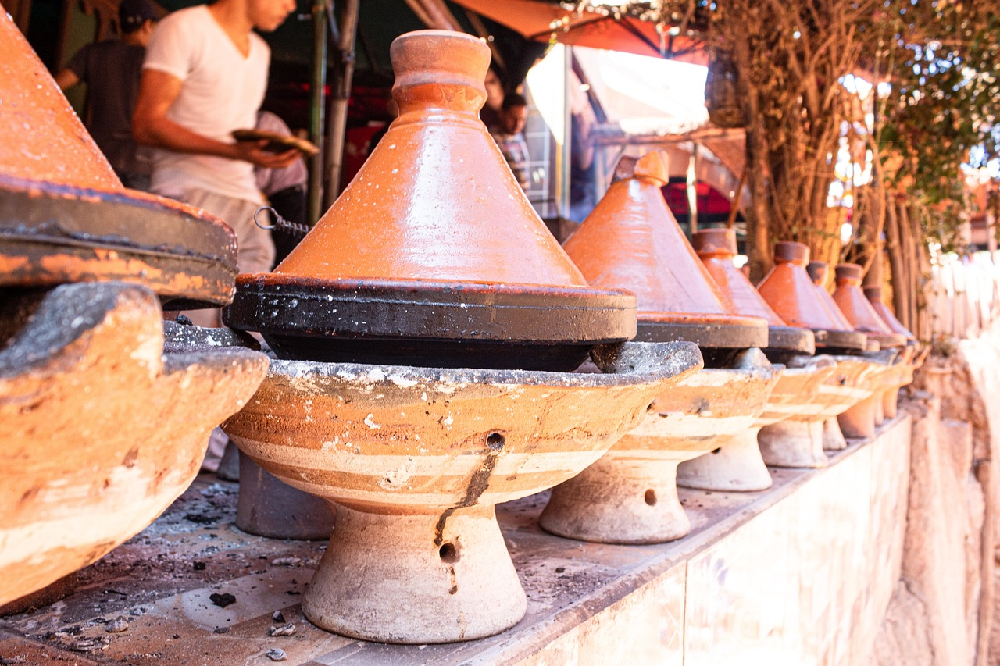

The Moroccan Tajin

Chicken tagine is a traditional Moroccan dish of chicken
braised with spices, garlic, onion, olives, and preserved
lemons. It’s a company-worthy dish yet easy enough to
throw together on a not-too-busy weeknight. The word
tagine refers to the shallow clay vessel with a
cone-shaped lid in which the dish is traditionally
cooked, but you don’t need one to make it. I use a
large cast-iron braiser; a wide Dutch oven or heavy
covered skillet will work, too. This recipe, tweaked a
bit from Cook’s Illustrated, does not call for preserved
lemons, a specialty ingredient that can be difficult
to find. Instead, lemon zest and fresh lemon juice add
tart brightness to the dish. Serve the chicken on a
platter or individual plates over a bed of couscous.
Wondering how to make one? let's dive in.
Ingredients
- ¼ cup Private Reserve extra virgin olive oil, more for later
- 2 medium yellow onions, peeled and chopped
- 8-10 garlic cloves, peeled and chopped
- 2 large carrots, peeled and chopped
- 2 large russet potatoes, peeled and cubed
- 1 large sweet potato, peeled and cubed
- Salt
- 1 tbsp Harissa spice blend
- 1 tsp ground coriander
- 1 tsp ground cinnamon
- ½ tsp ground turmeric
- 2 cups canned whole peeled tomatoes
- ½ cup heaping chopped dried apricot
- 1 quart low-sodium vegetable broth (or broth of your choice)
- 2 cups cooked chickpeas
- 1 lemon, juice of
- Handful fresh parsley leaves
Steps
- In a large heavy pot or Dutch Oven, heat olive oil over medium heat until just shimmering. Add onions and increase heat to medium-high. Saute for 5 minutes, tossing regularly.
- Add garlic and all the chopped veggies. Season with salt and spices. Toss to combine
- Cook for 5 to 7 minutes on medium-high heat, mixing regularly with a wooden spoon.
- Add tomatoes, apricot and broth. Season again with just a small dash of salt.
- Keep the heat on medium-high, and cook for 10 minutes. Then reduce heat, cover and simmer for another 20 to 25 minutes or until veggies are tender.
the content of this recipe was copied from This site